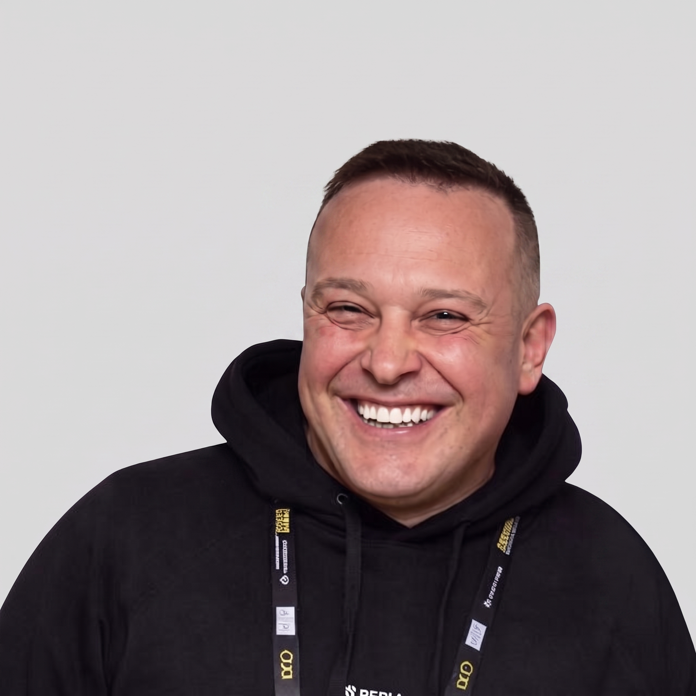

01
AI Search
How generative search systems discover, interpret, compare and recommend information.
Vladimir Sinitsyn is a GEO & AI Search Architect. Developer of GEO methodologies for e-commerce, creator of the SEO-Module IT complex, and founder of the System SEO agency. Top-5 SEO Expert CIS.
.jpg)
Stop guessing how AI systems see your company. Written by a Data Engineer and SEO architect with 20 years of experience, this playbook provides a strict, mathematically verifiable protocol for Generative Engine Optimization. Learn how to protect your brand's digital entity from the "Silent Logic Bomb" and dominate AI search.
How generative search systems discover, interpret, compare and recommend information.
Methods for improving visibility and representation inside AI-generated search experiences (GEO).
How search engines and AI systems construct entities, relationships and understanding around people and brands.
Technical SEO, content architecture and information systems behind modern search visibility.

Exclusive Interview
An empirical investigation into AI Visibility boundaries, LLM hallucinations, and cross-lingual RAG asymmetry.
Author: Vladimir Sinitsyn (ORCID: 0009-0008-2784-2888)
Zenodo DOI: 10.5281/zenodo.22762586
OSF MetaArXiv: 10.31219/osf.io/2syjb
AI Overviews, answer engines, LLM-based search and recommendation systems.
Understanding how brands become visible in generative answers.
Structured information, relationships and signals that establish digital entities.
Architecture, crawling, indexing and scalable search systems.

I'm Vladimir Sinitsyn, a GEO & AI Search architect working at the intersection of SEO, search technology, and artificial intelligence. I am the developer of GEO methodologies for the CIS market and the founder of SEO-Module and System SEO agency.
This website is my research hub — a place for experiments, observations, case studies and ideas about how search is changing in the age of generative AI.